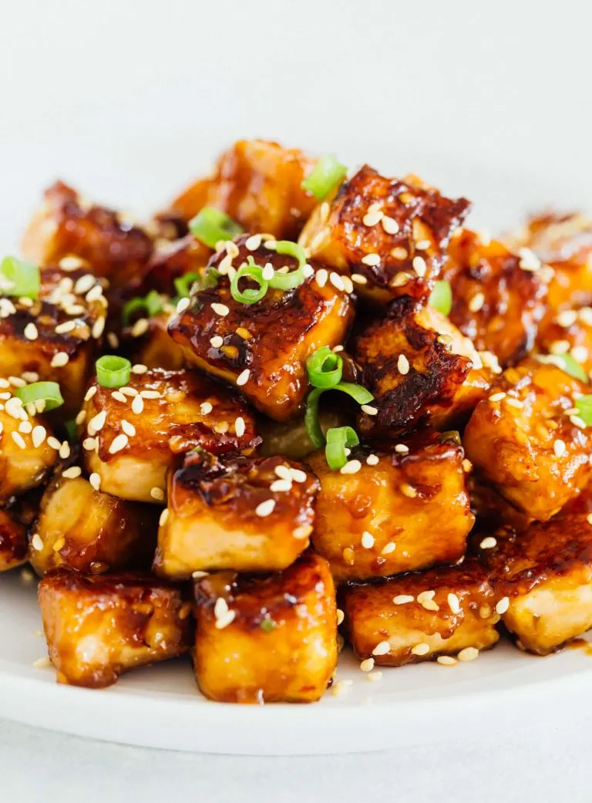

Pan Fried Sesame Garlic Tofu

Description
It’s a great source of protein and low in fat.
It’s so tender too and it soaks up all the flavor of the dish.
It’s a great blank slate and super versatile.
Ingredients
- Tofu
- Soy sauce
- Sambal oelek
- Rice vinegar
- Honey
- Sesame Oil
- Green Onion
Steps
- Drain the tofu package
- Press the tofu to get the remaing liquid out
- Let it press for 30min, but change paper towel after 15min
- Coat the tofu in cornstarch
- Fry the fofu in the pan for 3-4min on each side
- Make a sauce out of all the ingridents and coat the tofu in the sauce
<<<<<<< HEAD
Homepage
=======
Homepage
>>>>>>> 547af9c886d153f5777b28b4f479011985f2fdf0